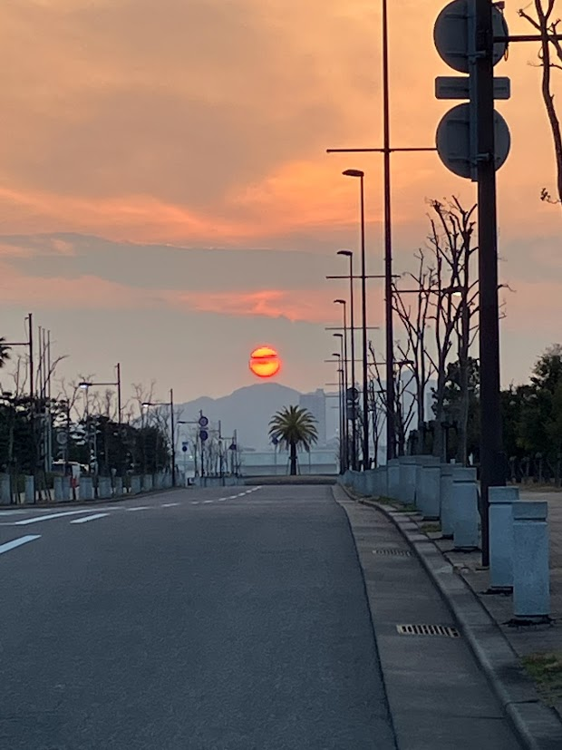

スライドショー用に6枚の画像（main-1.jpg 〜 main-6.jpg）を順次アップロードしてください

メンバー紹介・研究業績

藤本 浩一
Hirokazu Fujimoto
主な研究テーマ
精神科訪問看護における暴力リスクの評価ツールの開発や、精神障害者の地域生活支援、リスクマネジメントに関する研究を行っています。
研究業績
📊 researchmap で詳細を見る
石田 絵美子
Emiko Ishida
主な研究テーマ
現象学的アプローチを用いて精神科看護実践を深く理解し、病院から地域への移行における関係性や支援者の体験に関する研究に従事しています。
研究業績
📊 researchmap で詳細を見る
向畑 毅
Tsuyoshi Mukaihata
主な研究テーマ
精神科看護師のワーク・エンゲイジメントや情動知能に着目し、ケアの質や職場環境の改善に寄与する研究を行っています。
研究業績
📊 researchmap で詳細を見る学生へのメッセージ
「こころ」の健康を支える専門性を、
臨床と研究の架け橋となって探究していきましょう。
精神看護学は、対人関係という目に見えない技術を科学するエキサイティングな分野です。学部生・大学院生の皆さんが、精神科看護の奥深さに触れ、自らのケアの在り方を問い直せるような学びの場を提供します。
お知らせ
随時更新します
お問い合わせ
大学院入学希望や研究内容、共同研究に関するご質問は、以下までお気軽にご連絡ください。
兵庫医科大学 精神看護学研究室
兵庫県神戸市中央区港島1丁目3番地6（神戸キャンパス）
✉ seishinkangodesu★gmail.com
※スパム対策のため、★を@に変更して送信してください